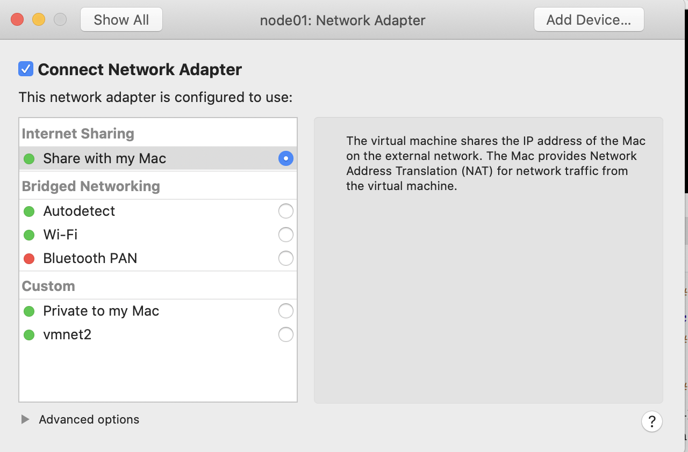
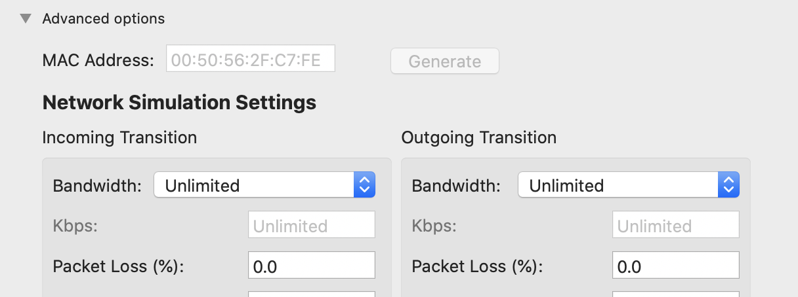

大数据环境搭建(MAC) 1. Linux 环境配置 1.1 Vmware Funsion Linux网络配置 1.1.1 查看本机网络 1 2 3 4 5 6 7 # 1. 查看vmnet网络配置，本机mac上 cat /Library/Preferences/VMware\ Fusion/vmnet8/nat.conf # 2. 可以看到如下部分信息，记住下面信息，用来配置linux [host] # NAT gateway address ip = 192.168.83.2 netmask = 255.255.255.0
1.1.2 配置linux网络
setting -> Network Adapter -> Share with my msc 如下图

点击上图左下角 Advanced options，点击Generate（生成MAC Address）

启动虚拟机
1 2 3 4 5 6 7 8 9 10 11 12 13 14 15 16 17 # 1. 修改配置文件 sudo vi /etc/sysconf/network-scripts/ifcg-ens192 # 2. 修改下面内容 # 改为静态 BOOTPROTO=static ONBOOT=yes # 与上面网段保持一致 IPPADDR=192.168.83.100 # 与上面一致 NETMASK=255.255.255.0 # 与上面ip一致 GATEWAY=192.168.83.2 DNS1=8.8.8.8 # 3. 修改之后，重启network service network restart
关闭防火墙，selinux
1 2 3 4 5 6 7 8 # 关闭 systemctl stop firewalld # 永久关闭 systemctl disable firewalld # 关闭selinux，修改下面文件内容 vi /etc/selinux/config #进入selinux设置文件 SELINUX=disabled
1.2. Linux 设置免密登陆 1.2.1 设置用户 & 权限 1 2 3 4 5 6 7 8 9 10 11 # 1. 创建hadoop用户 useradd hadoop #添加hadoop用户 passwd hadoop #给hadoop用户添加密码 hadoop #密码设为hadoop # 2. 设置用户权限 visudo #进入用户权限配置文件 # root ALL=(ALL) ALL hadoop ALL=(ALL) ALL # 给hadoop用户添加所有权限 # 3. 切换到hadoop用户 su - hadoop # 加上- 表示切换同时拥有权限
1.2.2 免密登陆
修改/etc/hosts 文件
1 2 3 4 5 6 sudo vi /etc/hosts # 添加如下内容 192.168.83.100 node01 192.168.83.110 node02 192.168.83.120 node03
配置免密登陆
1 2 3 4 5 6 7 8 9 10 11 12 13 14 15 16 17 18 # 1. hadoop用户下执行下列命令，必须！ # 下面操作node01，node02，node03 都执行，回车next。 ssh-keygen -t rsa #生成公钥 # 2. 三台机器的公钥全部拷贝到node01 ssh-copy-id node01 # 3. 第一台机器执行，“:PWD”的意思是：拷贝目标文件位置和node01的位置一致。 cd /home/hadoop/.ssh/ scp authorized_keys node02:$PWD #将node01的授权文件拷贝到node02 scp authorized_keys node03:$PWD #将node01的授权文件拷贝到node03 # 4. 验证免密登录 # 在node01执行 ssh node02 #在node01登录node02，不需要密码就ok ssh node03 #在node01登录node02，不需要密码就ok # 回到node01 logout
1.3 时间同步 1.3.1 同步阿里云 1 2 3 4 5 6 7 # 安装ntpdate sudo yum -y install ntpdate crontab -e */1 * * * * /usr/sbin/ntpdate time1.aliyun.com # 如果时间不通可以执行 sudo ntpdate -u asia.pool.ntp.org
1.3.2 同步node01时间
1 2 3 4 5 6 7 8 9 10 11 12 13 14 15 16 17 18 19 20 21 22 23 24 25 26 27 28 29 30 31 32 33 34 # 1. 安装ntp软件（所有） # (注意：ntpd作为node01服务端，node02、node03 ntpdate作为客户端软件不同) sudo yum -y install ntpd # 2. 设置时区为中国上海（所有） timedatectl set-timezone Asia/Shanghai # 3. node01启动ntp服务，作为服务端供其他节点同步时间 systemctl start ntpd # 4. node01设置开机启动 systemctl enable ntpd # 5.修改配置 node01上 sudo vi /etc/ntp.conf # 注释掉以下四行，添加最后两行。对应自己的vmnt8内容 # server 0.centos.pool.ntp.org iburst # server 1.centos.pool.ntp.org iburst # server 2.centos.pool.ntp.org iburst # server 3.centos.pool.ntp.org iburst restrict 192.168.83.2 mask 255.255.255.0 nomodify notrap server 127.127.1.0 # 5.1 node02 node03修改配置 sudo vi /etc/sysconfig/ntpdate # 修改为 yes SYNC_HWCLOCK=yes crontab -e */1 * * * * /usr/sbin/ntpdate 192.168.83.100 # 6. node02、node03重启服务 systemctl restart ntpdate
2.Hadoop环境搭建 2.1 配置hadoop-env.sh 1 2 3 4 5 # hadoop 用户下 su - hadoop vi /kfly/install/hadoop-2.6.0-cdh5.14.2/etc/hadoop/hadoop-env.sh export JAVA_HOME=/kfly/install/jdk1.8.0_141 #修改为此变量
2.2 配置core-site.xml 1 2 # 在hadoop用户下打开配置文件： vi /kfly/install/hadoop-2.6.0-cdh5.14.2/etc/hadoop/core-site.xml
1 2 3 4 5 6 7 8 9 10 11 12 13 14 15 16 17 18 19 20 21 22 23 24 25 26 27 28 29 30 31 32 <configuration > <property > <name > fs.defaultFS</name > <value > hdfs://node01:8020</value > </property > <property > <name > hadoop.tmp.dir</name > <value > /kfly/install/hadoop-2.6.0/hadoopDatas/tempDatas</value > </property > <property > <name > io.file.buffer.size</name > <value > 4096</value > </property > <property > <name > fs.trash.interval</name > <value > 10080</value > <description > 检查点被删除后的分钟数。 如果为零，垃圾桶功能将被禁用。 该选项可以在服务器和客户端上配置。 如果垃圾箱被禁用服务器端，则检查客户端配置。 如果在服务器端启用垃圾箱，则会使用服务器上配置的值，并忽略客户端配置值。 </description > </property > <property > <name > fs.trash.checkpoint.interval</name > <value > 0</value > <description > 垃圾检查点之间的分钟数。 应该小于或等于fs.trash.interval。 如果为零，则将该值设置为fs.trash.interval的值。 每次检查指针运行时， 它都会从当前创建一个新的检查点，并删除比fs.trash.interval更早创建的检查点。 </description > </property > </configuration >
2.3 配置hdfs-site.xml 1 2 # 在hadoop用户下打开配置文件： vi /kkb/install/hadoop-2.6.0/etc/hadoop/hdfs-site.xml
1 2 3 4 5 6 7 8 9 10 11 12 13 14 15 16 17 18 19 20 21 22 23 24 25 26 27 28 29 30 31 32 33 34 35 36 37 38 39 40 41 42 43 44 45 46 47 48 49 50 51 52 53 54 <configuration > <property > <name > dfs.namenode.secondary.http-address</name > <value > node01:50090</value > </property > <property > <name > dfs.namenode.http-address</name > <value > node01:50070</value > </property > <property > <name > dfs.namenode.name.dir</name > <value > file:///kfly/install/hadoop-2.6.0/hadoopDatas/namenodeDatas</value > </property > <property > <name > dfs.datanode.data.dir</name > <value > file:///kfly/install/hadoop-2.6.0/hadoopDatas/datanodeDatas</value > </property > <property > <name > dfs.namenode.edits.dir</name > <value > file:///kfly/install/hadoop-2.6.0/hadoopDatas/dfs/nn/edits</value > </property > <property > <name > dfs.namenode.checkpoint.dir</name > <value > file:///kfly/install/hadoop-2.6.0/hadoopDatas/dfs/snn/name</value > </property > <property > <name > dfs.namenode.checkpoint.edits.dir</name > <value > file:///kfly/install/hadoop-2.6.0/hadoopDatas/dfs/nn/snn/edits</value > </property > <property > <name > dfs.replication</name > <value > 3</value > </property > <property > <name > dfs.permissions</name > <value > false</value > </property > <property > <name > dfs.blocksize</name > <value > 134217728</value > </property > </configuration >
2.4 配置mapred-site.xml 1 2 3 4 5 # 在hadoop用户下操作,进入指定文件夹： cd /kfly/install/hadoop-2.6.0-cdh5.14.2/etc/hadoop/ # 由于原来没有mapred-site.xml配置文件，需要根据模板复制一份： cp mapred-site.xml.template mapred-site.xml vi /kfly/install/hadoop-2.6.0-cdh5.14.2/etc/hadoop/mapred-site.xml
1 2 3 4 5 6 7 8 9 10 11 12 13 14 15 16 17 18 19 <configuration > <property > <name > mapreduce.framework.name</name > <value > yarn</value > </property > <property > <name > mapreduce.job.ubertask.enable</name > <value > true</value > </property > <property > <name > mapreduce.jobhistory.address</name > <value > node01:10020</value > </property > <property > <name > mapreduce.jobhistory.webapp.address</name > <value > node01:19888</value > </property > </configuration >
2.5 配置yarn-site.xml 1 2 # 在hadoop用户下操作 vi /kfly/install/hadoop-2.6.0/etc/hadoop/yarn-site.xml
1 2 3 4 5 6 7 8 9 10 11 12 13 14 15 16 17 18 19 20 21 22 23 24 25 26 27 28 29 30 31 32 33 34 35 36 37 38 39 40 41 42 43 <configuration > <property > <name > yarn.resourcemanager.hostname</name > <value > node01</value > </property > <property > <name > yarn.nodemanager.aux-services</name > <value > mapreduce_shuffle</value > </property > <property > <name > yarn.log-aggregation-enable</name > <value > true</value > </property > <property > <name > yarn.log.server.url</name > <value > http://node01:19888/jobhistory/logs</value > </property > <property > <name > yarn.log-aggregation.retain-seconds</name > <value > 2592000</value > </property > <property > <name > yarn.nodemanager.log.retain-seconds</name > <value > 604800</value > </property > <property > <name > yarn.nodemanager.log-aggregation.compression-type</name > <value > gz</value > </property > <property > <name > yarn.nodemanager.local-dirs</name > <value > /kkb/install/hadoop-2.6.0-cdh5.14.2/hadoopDatas/yarn/local</value > </property > <property > <name > yarn.resourcemanager.max-completed-applications</name > <value > 1000</value > </property > </configuration >
2.6 编辑slaves 此文件用于配置集群有多少个数据节点,我们把node2，node3作为数据节点,node1作为集群管理节点
1 2 3 4 5 6 # 在hadoop用户下操作 vim /kfly/install/hadoop-2.6.0/etc/hadoop/slaves node01 #添加 node02 #添加 node03 #添加
2.7 创建文件存放目录 1 2 3 4 5 6 7 # 在hadoop用户下操作 mkdir -p /kfly/install/hadoop-2.6.0-cdh5.14.2/hadoopDatas/tempDatas mkdir -p /kfly/install/hadoop-2.6.0-cdh5.14.2/hadoopDatas/namenodeDatas mkdir -p /kfly/install/hadoop-2.6.0-cdh5.14.2/hadoopDatas/datanodeDatas mkdir -p /kfly/install/hadoop-2.6.0-cdh5.14.2/hadoopDatas/dfs/nn/edits mkdir -p /kfly/install/hadoop-2.6.0-cdh5.14.2/hadoopDatas/dfs/snn/name mkdir -p /kfly/install/hadoop-2.6.0-cdh5.14.2/hadoopDatas/dfs/nn/snn/edits
2.8 拷贝到其他节点 1 2 3 4 5 # 分发到各个节点下,$PWD 相同目录 scp -r hadoop-2.6.0 node02:$PWD # 分发配置文件 scp /etc/profile node02:$PWD
2.9 格式化节点 1 2 3 4 5 # 下面命令只在node01上执行 hdfs namenode -format #格式化 # 启动 start-all.sh
2.10 访问
2.11. Hadoop Ha高可用 hadoop ha 高可用
3. hive环境搭建 3.1 mysql安装 1 2 3 4 5 6 7 8 9 10 11 12 13 14 15 16 17 18 19 20 21 22 23 24 25 26 27 28 29 30 31 32 33 34 35 36 # 安装wget sudo yum install wget # 1. 换源 # 1.1 备份系统源 sudo mv /etc/yum.repos.d/CentOS-Base.repo /etc/yum.repos.d/CentOS-Base.repo.backup # 1.2 下载阿里云CENTOS7镜像文件 wget -O /etc/yum.repos.d/CentOS-Base.repo http://mirrors.aliyun.com/repo/Centos-7.repo # 1.3 清理缓存、生成新的缓存 sudo yum clean all sudo yum makecache # 1.4 更新源 sudo yum update -y # 2. 使用yum安装MySQL,下载并安装MySQL官方的 Yum Repository sudo wget -i -c http://dev.mysql.com/get/mysql57-community-release-el7-10.noarch.rpm sudo yum -y install mysql57-community-release-el7-10.noarch.rpm sudo yum -y install mysql-community-server # 3. 启动mysql，查看运行状态 systemctl start mysqld.service systemctl status mysqld.service # 4. 找出默认密码如下图所示 sudo grep "password" /var/log/mysqld.log # 5. 登陆、修改密码 mysql -uroot -p # 回车后会提示输入密码 ALTER USER 'root'@'localhost' IDENTIFIED BY 'new password'; # 注意： 如果失败，修改密码策略,先修改一个复杂的密码，在修改策略，修改密码 ALTER USER 'root'@'localhost' IDENTIFIED BY 'z?guwrBhH7p>'; set global validate_password_policy=0; set global validate_password_policy=1; # 6. 设置mysql可以外部连接 grant all on *.* to root@'%' identified by '数据库密码';
3.2 hive安装 3.2.1 下载hive的安装包
3.2.2 hive-env.sh 1 2 3 4 5 6 vim hive-env.sh # 配置HADOOP_HOME路径 export HADOOP_HOME=/kfly/install/hadoop-2.6.0 # 配置HIVE_CONF_DIR路径 export HIVE_CONF_DIR=/kfly/install/hive-1.1.0-cdh5.14.2/conf
3.2.3 hive-site.xml 1 2 3 4 5 6 7 8 9 10 11 12 13 14 15 16 17 18 19 20 21 22 23 24 25 26 27 28 29 30 31 32 <? xml-stylesheet type="text/xsl" href="configuration.xsl" ?> <configuration > <property > <name > javax.jdo.option.ConnectionURL</name > <value > jdbc:mysql://node02:3306/hive?createDatabaseIfNotExist=true&characterEncoding=latin1&useSSL=false</value > </property > <property > <name > javax.jdo.option.ConnectionDriverName</name > <value > com.mysql.jdbc.Driver</value > </property > <property > <name > javax.jdo.option.ConnectionUserName</name > <value > root</value > </property > <property > <name > javax.jdo.option.ConnectionPassword</name > <value > 123456</value > </property > <property > <name > hive.cli.print.current.db</name > <value > true</value > </property > <property > <name > hive.cli.print.header</name > <value > true</value > </property > <property > <name > hive.server2.thrift.bind.host</name > <value > node02</value > </property > </configuration >
3.2.4 日志路径 1 2 3 4 vim hive-log4j.properties # 更改以下内容，设置我们的日志文件存放的路径 hive.log.dir=/kkb/install/hive-1.1.0-cdh5.14.2/logs/
3.4.5 lib包 1 2 ps: ==需要将mysql的驱动包上传到hive的lib目录下== * 例如 mysql-connector-java-5.1.38.jar
3.3 hive使用Spark on Yarn作为计算引擎 查看
4. zookeeper环境搭建 4.1 下载软件 点击下载 zookeeper-3.4.5-cdh5.14.2.tar.gz
4.2 修改配置文件 1 2 3 4 5 6 7 8 9 10 11 12 13 14 15 16 17 18 19 20 21 22 # 1. copy配置文件 cd /kfly/install/zookeeper-3.4.5-cdh5.14.2/conf cp zoo_sample.cfg zoo.cfg # 2. 创建存放数据目录 mkdir -p /kfly/install/zookeeper-3.4.5-cdh5.14.2/zkdatas # 编辑 vim zoo.cfg # 3. 文件内容如下 dataDir=/kfly/install/zookeeper-3.4.5-cdh5.14.2/zkdatas autopurge.snapRetainCount=3 autopurge.purgeInterval=1 server.1=node01:2888:3888 server.2=node02:2888:3888 server.3=node03:2888:3888 # 4 分发到各个节点 # 5. 写入myid文件，myid分别对应，node01:1，node02:2,node03.3、一次累加 echo 1 > /kfly/install/zookeeper-3.4.5-cdh5.14.2/zkdatas/myid # 6. 启动服务、查看状态 bin/zkServer.sh start bin/zkServer.sh status
5. HBase环境搭建 5.1 下载软件 点击下载hbase-1.2.0-cdh5.14.2.tar.gz
5.2 hbase-env.sh 1 2 3 export JAVA_HOME=/kfly/install/jdk1.8.0_141 # 使用外部的zookeeper集群 export HBASE_MANAGES_ZK=false
5.3 hbase-site.xml 1 2 3 4 5 6 7 8 9 10 11 12 13 14 15 16 17 18 19 20 21 22 23 24 25 26 27 28 29 30 31 <configuration > <property > <name > hbase.rootdir</name > <value > hdfs://node01:8020/HBase</value > </property > <property > <name > hbase.cluster.distributed</name > <value > true</value > </property > <property > <name > hbase.master.port</name > <value > 16000</value > </property > <property > <name > hbase.zookeeper.quorum</name > <value > node01,node02,node03</value > </property > <property > <name > hbase.zookeeper.property.clientPort</name > <value > 2181</value > </property > <property > <name > hbase.zookeeper.property.dataDir</name > <value > /kfly/install/zookeeper-3.4.5-cdh5.14.2/zkdatas</value > </property > <property > <name > zookeeper.znode.parent</name > <value > /HBase</value > </property > </configuration >
5.4 regionservers 1 2 3 4 5 6 7 # 配置文件 目录 conf下 vim regionservers # 内容如下 node01 node02 node03
5.5 back-masters
创建back-masters配置文件，里边包含备份HMaster节点的主机名，每个机器独占一行，实现HMaster的高可用
1 [hadoop@node01 conf]$ vim backup-masters
将node02作为备份的HMaster节点，问价内容如下
5.6 创建软连接
1 2 3 ln -s /kfly/install/hadoop-2.6.0-cdh5.14.2/etc/hadoop/core-site.xml /kfly/install/hbase-1.2.0-cdh5.14.2/conf/core-site.xml ln -s /kfly/install/hadoop-2.6.0-cdh5.14.2/etc/hadoop/hdfs-site.xml /kfly/install/hbase-1.2.0-cdh5.14.2/conf/hdfs-site.xml
5.7 添加HBase环境变量
1 2 3 4 5 6 7 sudo vim /etc/profile # 添加如下 export HBASE_HOME=/kkb/install/hbase-1.2.0-cdh5.14.2 export PATH=$PATH:$HBASE_HOME/bin # 立即生效 source /etc/profile
5.8 HBase的启动与停止
1 2 3 4 5 6 7 [hadoop@node01 ~]$ start-hbase.sh # HMaster节点上启动HMaster命令 hbase-daemon.sh start master # 启动HRegionServer命令 hbase-daemon.sh start regionserver
6. Flume环境搭建 1. 下载软件 点击下载 flume-ng-1.6.0-cdh5.14.2.tar.gz
2. flume-env.sh 1 export JAVA_HOME=/kfly/install/jdk1.8.0_141
7. Sqoop环境搭建 7.1. 下载软件 点击下载 sqoop-1.4.6-cdh5.14.2.tar.gz
7.2. sqoop-env.sh 1 2 3 4 5 6 7 8 9 10 11 # Set path to where bin/hadoop is available export HADOOP_COMMON_HOME=/kfly/install/hadoop-2.6.0 # Set path to where hadoop-*-core.jar is available export HADOOP_MAPRED_HOME=/kfly/install/hadoop-2.6.0 # set the path to where bin/hbase is availableexport HBASE_HOME=/kfly/install/hbase-1.2.0-cdh5.14.2 # Set the path to where bin/hive is available export HIVE_HOME=/kfly/install/hive-1.1.0-cdh5.14.2
8. zakaban环境搭建 8.1 下载软件 点击下载
azkaban-web-server-2.5.0.tar.gz
azkaban-executor-server-2.5.0.tar.gz
azkaban-sql-script-2.5.0.tar.gz
8.2 azkaban web服务器安装 8.2.1 配置SSL安全访问协议 1 2 3 4 5 6 7 8 9 10 11 12 13 14 15 16 17 18 19 20 21 22 23 24 25 26 27 28 29 30 31 32 33 34 35 36 37 38 39 40 41 42 43 44 45 46 47 48 # 1. 创建安装目录，解压、解压文件重命名 mkdir /kfly/install/azkaban tar –zxvf azkaban-web-server-2.5.0.tar.gz -C /kfly/install/azkaban mv /kkb/install/azkaban/azkaban-web-2.5.0 /kkb/install/azkaban/server # 2. 在server目下执行下边的命令 keytool -keystore keystore -alias jetty -genkey -keyalg RSA # Keytool: 是java数据证书的管理工具，使用户能够管理自己的公/私钥对及相关证书。 # -keystore：指定密钥库的名称及位置(产生的各类信息将不在.keystore文件中) # -alias： 对我们生成的.keystore 进行指认别名；如果没有默认是mykey # -genkey： 在用户主目录中创建一个默认文件".keystore" # -keyalg： 指定密钥的算法 RSA/DSA 默认是DSA # 运行此命令后,会提示输入当前生成 keystore的密码及相应信息,输入的密码请劳记 ------------------------------------------------------------------- 输入keystore密码： 再次输入新密码: 您的名字与姓氏是什么？ [Unknown]： 您的组织单位名称是什么？ [Unknown]： 您的组织名称是什么？ [Unknown]： 您所在的城市或区域名称是什么？ [Unknown]： 您所在的州或省份名称是什么？ [Unknown]： 该单位的两字母国家代码是什么 [Unknown]： CN CN=Unknown, OU=Unknown, O=Unknown, L=Unknown, ST=Unknown, C=CN 正确吗？ [否]： y 输入<jetty>的主密码 （如果和 keystore 密码相同，按回车）： 再次输入新密码: #完成上述工作后,将在当前目录生成 keystore 证书文件, # 3. 将keystore 考贝到 azkaban webserver 服务器根目录中. cp keystore /kfly/install/azkaban/server # 4. 配置时区、先生成时区配置文件Asia/Shanghai，用交互式命令 tzselect 即可. tzselect # 选5 --->选9---->选1----->选1 # 4.1、拷贝该时区文件，覆盖系统本地时区配置 cp /usr/share/zoneinfo/Asia/Shanghai /etc/localtime # 5.修改配置文件 # 5.2
8.2.2 修改配置文件
1 2 3 4 5 6 7 8 9 10 11 12 13 14 15 16 17 18 19 20 21 22 23 24 25 26 27 28 29 30 31 32 33 34 35 36 37 38 39 40 41 42 43 44 45 46 47 48 49 vim /kfly/install/azkaban/server/conf/azkaban.properties # 内容说明如下: # Azkaban Personalization Settings azkaban.name=Test #服务器UI名称,用于服务器上方显示的名字 azkaban.label=My Local Azkaban #描述 azkaban.color=#FF3601 #UI颜色 azkaban.default.servlet.path=/index web.resource.dir=web/ #默认根web目录 default.timezone.id=Asia/Shanghai #默认时区,已改为亚洲/上海 默认为美国 # Azkaban UserManager class user.manager.class=azkaban.user.XmlUserManager #用户权限管理默认类 user.manager.xml.file=conf/azkaban-users.xml #用户配置,具体配置参加下文 # Loader for projects executor.global.properties=conf/global.properties #global配置文件所在位置 azkaban.project.dir=projects database.type=mysql #数据库类型 mysql.port=3306 #端口号 mysql.host=node03 #数据库连接IP mysql.database=azkaban #数据库实例名 mysql.user=root #数据库用户名 mysql.password=123456 #数据库密码 # Velocity dev mode velocity.dev.mode=false #Jetty服务器属性. jetty.maxThreads=25 #最大线程数 jetty.ssl.port=8443 #Jetty SSL端口 jetty.port=8081 #Jetty端口 jetty.keystore=keystore #SSL文件名 jetty.password=123456 #SSL文件密码 jetty.keypassword=123456 #Jetty主密码 与 keystore文件相同 jetty.truststore=keystore #SSL文件名 jetty.trustpassword=123456 #SSL文件密码 # 执行服务器属性 executor.port=12321 #执行服务器端口 # 邮件设置 mail.sender=xxxxxxxx@163.com #发送邮箱 mail.host=smtp.163.com #发送邮箱smtp地址 mail.user=xxxxxxxx #发送邮件时显示的名称 mail.password=********** #邮箱密码 job.failure.email=xxxxxxxx@163.com #任务失败时发送邮件的地址 job.success.email=xxxxxxxx@163.com #任务成功时发送邮件的地址 lockdown.create.projects=false cache.directory=cache #缓存目录
1 vim /kfly/install/azkaban/server/conf/azkaban-users.xml
1 2 3 4 5 6 7 8 <azkaban-users > <user username ="azkaban" password ="azkaban" roles ="admin" groups ="azkaban" /> <user username ="metrics" password ="metrics" roles ="metrics" /> <user username ="admin" password ="admin" roles ="admin,metrics" /> <role name ="admin" permissions ="ADMIN" /> <role name ="metrics" permissions ="METRICS" /> </azkaban-users >
8.3 azkaban 执行服器安装 1 2 3 4 5 6 7 8 9 10 11 12 13 14 15 # 1. 解压azkaban-executor-server-2.5.0.tar.gz,重命名文件 tar -zxvf azkaban-executor-server-2.5.0.tar.gz -C /kfly/install/azkaban mv /kfly/install/azkaban/azkaban-executor-2.5.0 /kfly/install/azkaban/executor # 2. 修改配置文件 vim /kfly/install/azkaban/executor/conf/azkaban.properties # 内容如下---------- #Azkaban #时区 default.timezone.id=Asia/Shanghai #数据库设置----->需要修改的信息 mysql.host=node3 #数据库IP地址 mysql.database=azkaban #数据库实例名 mysql.user=root #数据库用户名 mysql.password=123456 #数据库密码
8.4 azkaban脚本导入 1 2 3 4 5 6 7 # 1. 解压azkaban-sql-script-2.5.0.tar.gz tar -zxvf azkaban-sql-script-2.5.0.tar.gz -C /kfly/install/azkaban # 2. 把解压后的脚本导入到mysql中、进入到mysql mysql> create database azkaban; mysql> use azkaban; mysql> source /kfly/install/azkaban/azkaban-2.5.0/create-all-sql-2.5.0.sql;
8.5 Azkaban启动
在azkaban web server服务器目录下执行启动命令
1 2 3 4 # 1. 启动web server服务、在azkaban web server服务器目录下执行启动命令 bin/azkaban-web-start.sh # 2. 启动executor执行服务、在azkaban executor服务器目录下执行启动命令 bin/azkaban-executor-start.sh
启动完成后,在浏览器(建议使用谷歌浏览器)中输入==https://服务器IP地址:8443== ,即可访问azkaban服务了.在登录中输入刚才新的户用名及密码,点击 login.
输入“IP地址:8443”无法访问 web 页面, 且后台报错，原因是浏览器安全证书限制
解决办法：使用“https://ip:8443”访问 , 发现已经可以访问了, 后台会报证数问题的错误, 忽略即可, 不影响使用, 选择高级 ——> 继续访问该网站
1 2 3 4 5 6 7 8 9 （1 ）、projects：azkaban最重要的一部分，创建一个工程，将所有的工作流放在工程中执行 （2 ）、scheduling：定时调度任务用的 （3 ）、executing: 显示当前运行的任务 （4 ）、History : 显示历史运行任务 一个project由3 个按钮： （1 ）、Flows：一个工作流，由多个job组成 （2 ）、Permissions: 权限管理 （3 ）、Project Logs：工程日志信息
9. Spark环境安装 9.1 下载软件 点击下载
9.2 修改配置文件 9.2.1 spark-env.sh 1 2 3 4 export JAVA_HOME=/kkb/install/jdk1.8.0_141export SPARK_DAEMON_JAVA_OPTS="-Dspark.deploy.recoveryMode=ZOOKEEPER -Dspark.deploy.zookeeper.url=node01:2181,node02:2181,node03:2181 -Dspark.deploy.zookeeper.dir=/spark"
1 2 3 4 ## 如果想运行spark-shell --master local[N] 读取HDFS上文件，则加上如下配置文件 export HADOOP_CONF_DIR=/kkb/install/hadoop-2.6.0-cdh5.14.2/etc/hadoop # 这就是读取hdfs下，hdfs://node01:8020/words.txt 文件 sc.textFile("/words.txt")
9.2.2 slaves 1 2 3 # 指定spark集群的worker节点 node02 node03
9.2.3 分发到各个节点 1 2 3 4 5 scp -r /kfly/install/spark node02:/kkb/install export SPARK_HOME=/kfly/install/sparkexport PATH=$PATH :$SPARK_HOME /bin:$SPARK_HOME /sbin
9.3 SparkSql整合Hive
步骤
1、需要把hive安装目录下的配置文件hive-site.xml拷贝到每一个spark安装目录下对应的conf文件夹中
2、需要一个连接mysql驱动的jar包拷贝到spark安装目录下对应的jars文件夹中
3、可以使用spark-sql脚本 后期执行sql相关的任务
1 2 3 4 5 spark-sql \ --master spark://node01:7077 \ --executor-memory 1g \ --total-executor-cores 4 \ --conf spasrk.sql.warehouse.dir=hdfs://node01:8020/user/hive/warehouse
1 2 3 4 5 6 7 8 9 #!/bin/sh SUBMITINFO="spark-sql --master spark://node01:7077 --executor-memory 1g --total-executor-cores 4 --conf spark.sql.warehouse.dir=hdfs://node01:8020/user/hive/warehouse" SQL="select * from kfly.psrson;" echo "$SUBMITINFO " echo "$SQL " $SUBMITINFO -e "$SQL "
9.4 Spark on Yarn
1 2 3 4 5 6 7 # # 修改文件 spark-env.sh # 指定java的环境变量 export JAVA_HOME=/kkb/install/jdk1.8.0_141 # 指定hadoop的配置文件目录 export HADOOP_CONF_DIR=/kkb/install/hadoop-2.6.0-cdh5.14.2/etc/hadoop
1 2 3 4 5 6 7 8 spark-submit --class org.apache.spark.examples.SparkPi \ --master yarn \ --deploy-mode cluster \ --driver-memory 1g \ --executor-memory 1g \ --executor-cores 1 \ /kfly/install/spark-2.3.3-bin-hadoop2.7/examples/jars/spark-examples_2.11-2.3.3.jar \ 10
10 kafka环境搭建 10.1 下载软件 点击下载 https://archive.apache.org/dist/kafka/1.0.1/kafka_2.11-1.0.1.tgz
10.2 修改配置文件
1 2 3 4 5 6 7 8 9 10 #指定kafka对应的broker id ，唯一(eg：node01 0,node02 1,node03 2) broker.id=0 #指定数据存放的目录 log.dirs=/kfly/install/kafka/kafka-logs #指定zk地址 zookeeper.connect=node01:2181,node02:2181,node03:2181 #指定是否可以删除topic ,默认是false 表示不可以删除 delete.topic.enable=true #指定broker主机名,node01 node02 node03 host.name=node01
1 2 export KAFKA_HOME=/kfly/install/kafka export PATH=$PATH:$KAFKA_HOME/bin
1 2 3 4 5 6 7 8 9 10 11 12 13 14 15 16 17 18 #!/bin/sh case $1 in "start" ){for host in node01 node02 node03 do ssh $host "source /etc/profile; nohup /kfly/install/kafka/bin/kafka-server-start.sh /kfly/install/kafka/config/server.properties > /dev/null 2>&1 &" echo "$host kafka is running..." done };; "stop" ){for host in node01 node02 node03 do ssh $host "source /etc/profile; nohup /kfly/install/kafka/bin/kafka-server-stop.sh >/dev/null 2>&1 &" echo "$host kafka is stopping..." done };; esac
10.3 kafka监控工具的安装 10.3.1. Kafka Manager 1 2 3 4 kafkaManager它是由雅虎开源的可以监控整个kafka集群相关信息的一个工具。 （1 ）可以管理几个不同的集群 （2 ）监控集群的状态(topics, brokers, 副本分布, 分区分布) （3 ）创建topic、修改topic相关配置
1 2 3 4 5 6 该监控是基于一个jar 包的形式运行，部署较为方便。只有监控功能，使用起来也较为安全 (1 )消费者组列表 (2 )查看topic 的历史消费信息. (3 )每个topic 的所有parition 列表(topic,pid,offset,logSize,lag,owner) (4 )对consumer 消费情况进行监控,并能列出每个consumer offset ,滞后数据。
10.3.2 Kafka Eagle
1、下载Kafka Eagle安装包
2、解压
tar -zxvf kafka-eagle-bin-1.2.3.tar.gz -C /kkb/install
解压之后进入到kafka-eagle-bin-1.2.3目录中
得到kafka-eagle-web-1.2.3-bin.tar.gz
然后解压 tar -zxvf kafka-eagle-web-1.2.3-bin.tar.gz
重命名 mv kafka-eagle-web-1.2.3 kafka-eagle-web
3、修改配置文件
进入到conf目录
修改system-config.properties
1 2 3 4 5 6 7 8 9 10 11 12 13 14 15 16 17 18 # 填上你的kafka集群信息 kafka.eagle.zk.cluster.alias=cluster1 cluster1.zk.list=node01:2181,node02:2181,node03:2181 # kafka eagle页面访问端口 kafka.eagle.webui.port=8048 # kafka sasl authenticate kafka.eagle.sasl.enable=false kafka.eagle.sasl.protocol=SASL_PLAINTEXT kafka.eagle.sasl.mechanism=PLAIN kafka.eagle.sasl.client=/kfly/install/kafka-eagle-bin-1.2.3/kafka-eagle-web/conf/kafka_client_jaas.conf # 添加刚刚导入的ke数据库配置，我这里使用的是mysql kafka.eagle.driver=com.mysql.jdbc.Driver kafka.eagle.url=jdbc:mysql://node02:3306/ke?useUnicode=true&characterEncoding=UTF-8&zeroDateTimeBehavior=convertToNull kafka.eagle.username=root kafka.eagle.password=123456
1 2 export KE_HOME=/kfly/install/kafka-eagle-web export PATH=$PATH:$KE_HOME/bin
1 2 3 sh bin/ke.sh start # 访问 `http://node01:8048/ke` # 用户名：admin password：123456